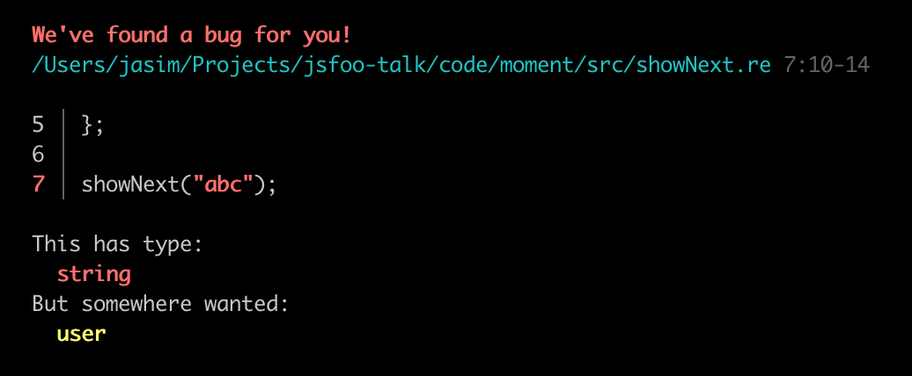
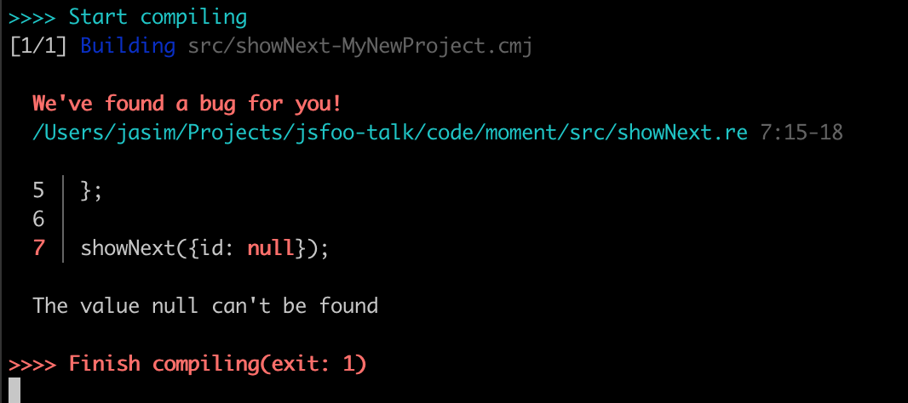
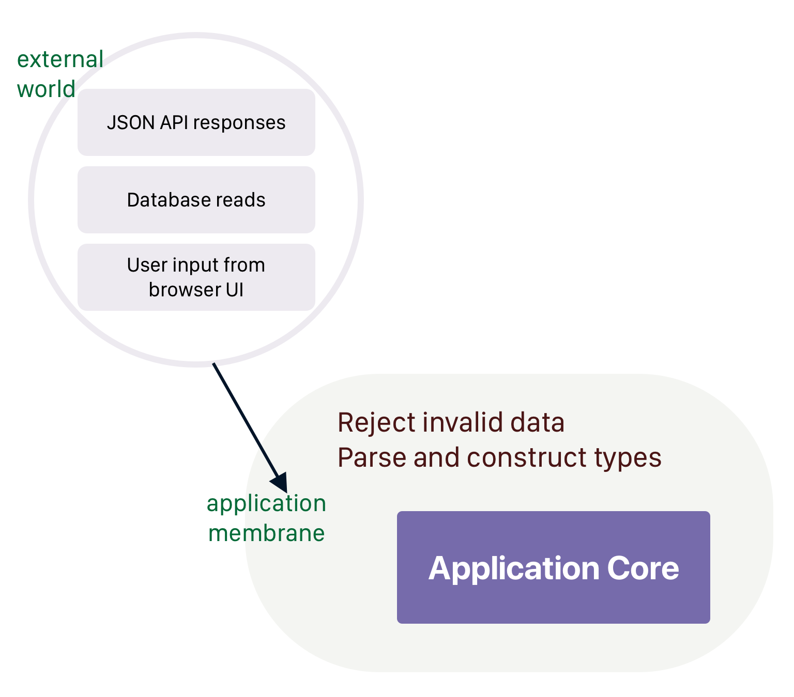

Thinking with Types
Jasim A Basheer
First released in 1990 in France
Fast programs approaching C-like speeds
ISWIM syntax (OCaml, Haskell) not ALGOL (C, Java, Javascript etc.)
// Generated by BUCKLESCRIPT VERSION 5.0.6, PLEASE EDIT WITH CARE
'use strict';
var Moment = require("moment");
var MomentRe = require("bs-moment/src/MomentRe.js");
if (Moment().isSame(MomentRe.moment(undefined, "2020-04-01"), "day")) {
console.log("It is the 1st of April!");
} else {
console.log("A dreary day");
}
/* Not a pure module */Javascript: this, variable hoisting, prototypes, ES6 classes, objects, mutations, functions, modules
Reason: functions, modules, types
Two principles:
The perfect computer program –
The one that does exactly what it should do, no more, no less, every time, with perfect reliability, and forever. The kind of perfection that you can get from mathematical definitions, which software is to a large extent, or from philosophical concepts.
“In search of software perfection”, by Dr. Xavier Leroy, author of OCaml
You will be user 17let showNext = u => {
console.log("You will be user " + (u.id + 1))
}let showNext = u => {
console.log("You will be user " + (u.id + 1))
}You will be user 1let showNext = u => {
console.log("You will be user " + (u.id + 1))
}let showNext = u => {
console.log("You will be user " + (u.id + 1))
}You will be user 1931let showNext = u => {
console.log("You will be user " + (u.id + 1))
}let showNext = u => {
console.log("You will be user " + (u.id + 1))
}You will be user NaNlet showNext = u => {
console.log("You will be user " + (u.id + 1))
}
let users = []
let lastUser = users[users.length - 1]
showNext(lastUser)Uncaught TypeError: Cannot read property 'id' of undefinedtype user = {id: int};
let showNext = u => {
Js.log("You will be user " ++ string_of_int(u.id + 1));
};
showNext({id: 15});You will be user 16


switch (play.type) {
case "tragedy":
return new TragedyCalculator(
aPerformance, aPlay
);
case "comedy":
thisAmount = 30000;
if (perf.audience > 20) {
thisAmount += 10000 + 500 * (perf.audience - 20);
}
thisAmount += 300 * perf.audience;
break;
default:
throw new Error(`unknown type: ${play.type}`);
}